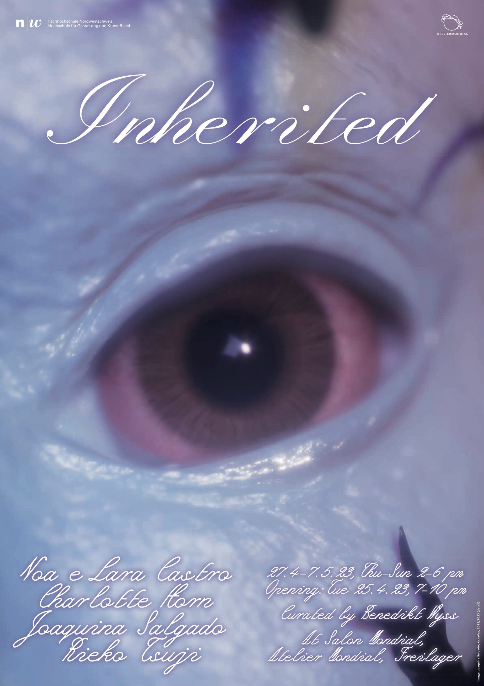
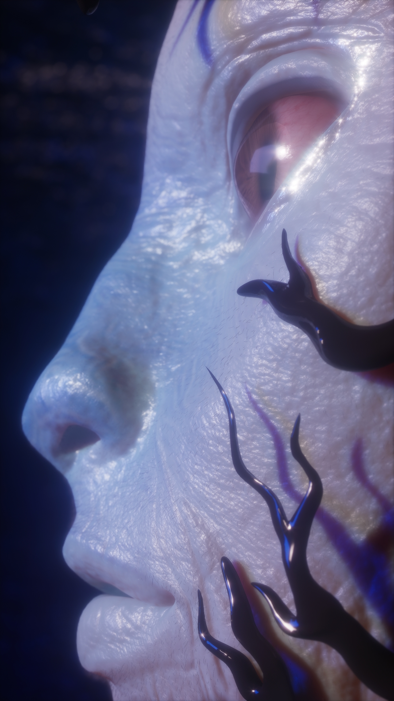
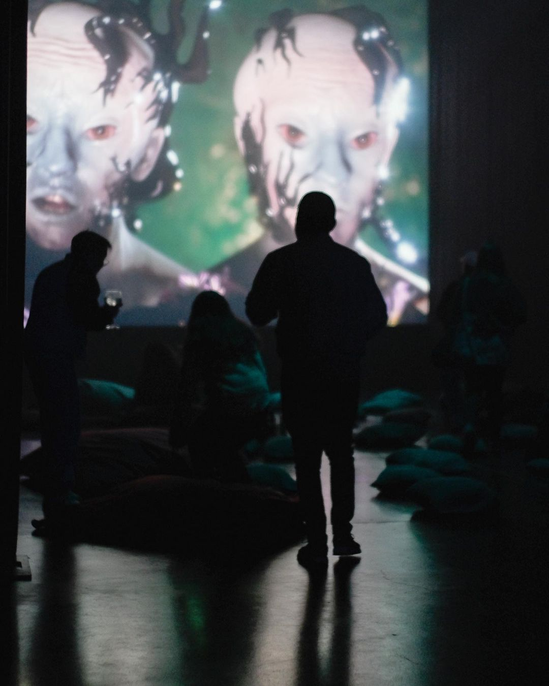
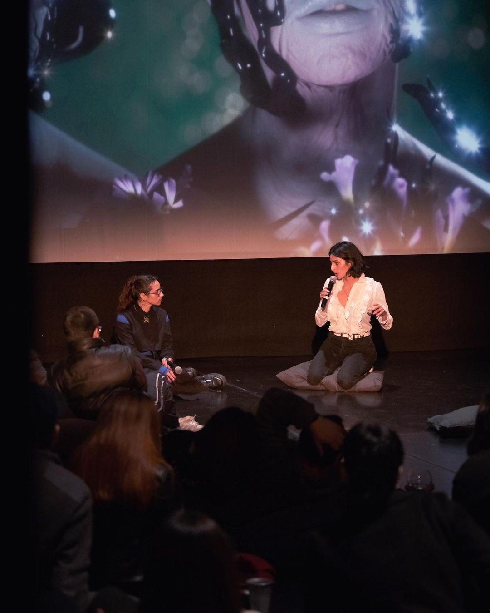
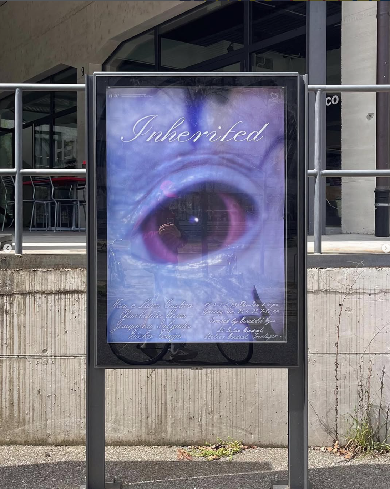
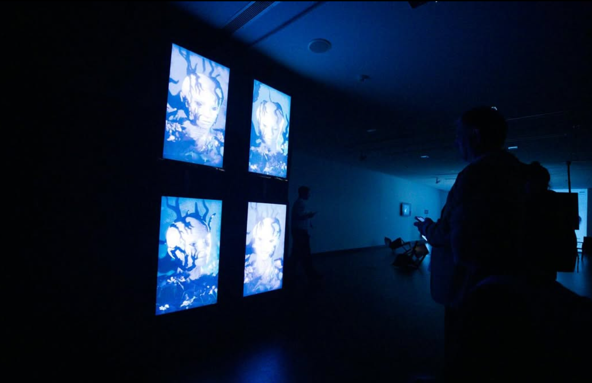
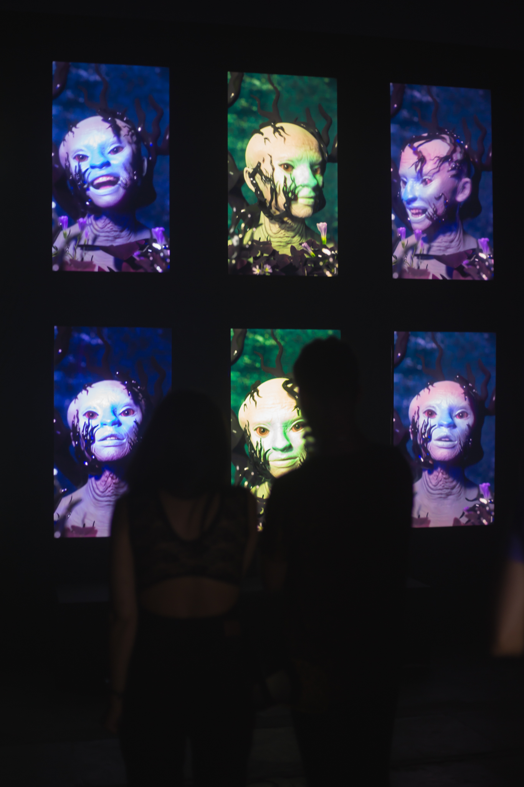
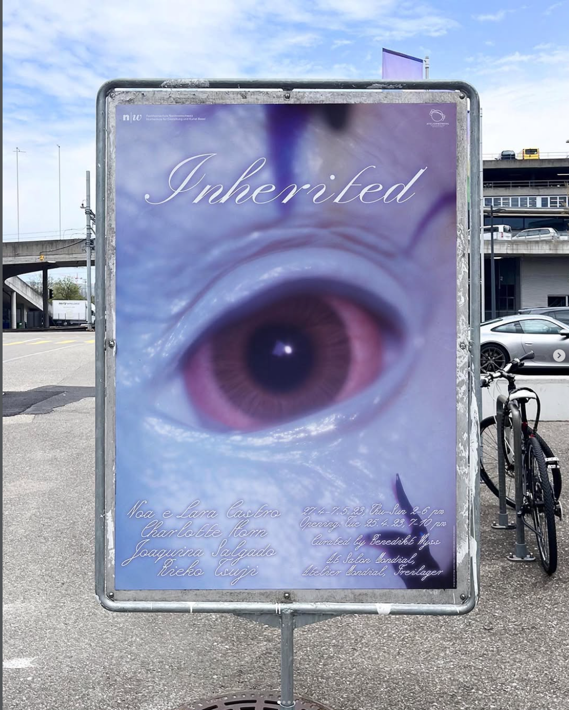
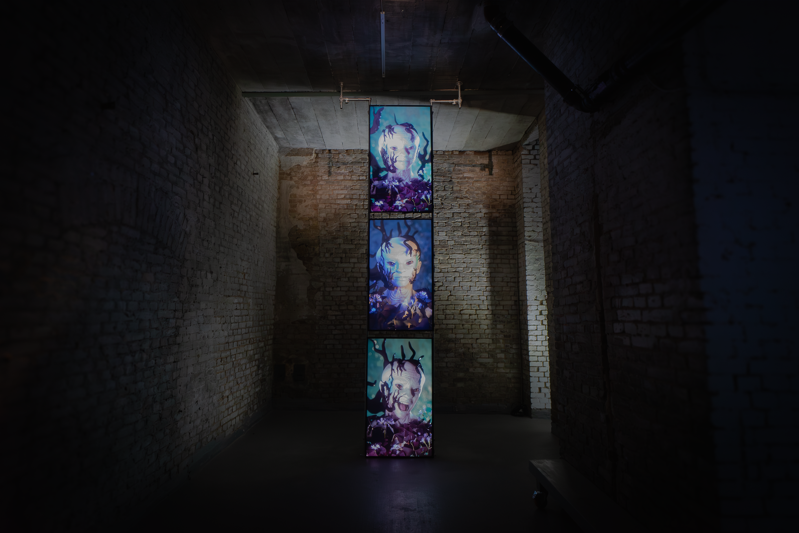

Avispish
What does it mean to exist in a world where every gesture can be turned into data?
Avispish is a multi-screen artwork featuring animated heads sculpted from the facial captures of different individuals. Each screen presents a distinct character, morphing through different expressions to form a visual and sonic narrative of fragmented conversations.
The artwork explores the theme of power dynamics and how individuals experience them differently based on their personal histories and cultural backgrounds. It also questions the impact of digital surveillance and the erosion of data privacy on our sense of intimacy. Through anonymous storytelling, Avispish seeks to express these themes in an unusual way.
The project was born as a response to police violence against demonstrators during International Women's Day 2023. The artist, along with three other women who were subjected to unjustified aggression, engaged in an anonymous conversation about their experiences—this exchange became the foundation of the piece. During the protest, attendees were forced to pass through a police checkpoint where their data was collected using facial capture techniques. This act of surveillance, imposed on a day dedicated to demanding rights, became the core of the project.

“Avispish” Installation during the collective exhibition “Inherited” in Atelier Mondial, Basel. Switzerland

Graphic Design: Sylvan Lanz
As an artistic response, Avispish repurposes motion capture; the same technology used in the repression, to document and reanimate these experiences. The captured data is transferred onto a digital character, creating an installation of four screens, each displaying a different version of the entity. With a slightly gentle and slightly severe look, the looping faces evoke a poetic gathering of machinic affections, animated by human experience. A plurality of shifting forms, existing only because they have been something else before.
AI-driven processes play a key role in the motion capture pipeline, enabling precise expression tracking. On a conceptual level, the use of AI mirrors the systems employed in surveillance and biometric control, here repurposed as tools for storytelling and for articulating personal narratives beyond institutional frameworks.
AI-driven processes play a key role in the motion capture pipeline, enabling precise expression tracking. On a conceptual level, the use of AI mirrors the systems employed in surveillance and biometric control, here repurposed as tools for storytelling and for articulating personal narratives beyond institutional frameworks.


Avispish (May 2023) - Cinema screen projection + Conversatory - Gesto digital en NAVE, Santiago de Chile, Chile.

Image By Vicente Palma
Through the years, Avispish has continued to evolve through conversations with women artists from the Global South. In more recent iterations, presented at CCK (Palacio Libertad) in Buenos Aires, these dialogues shifted toward a speculative perspective, moving from testimony and memory toward the imagination of possible futures. The work extends its original concerns with power, surveillance, and embodiment into a temporal shift that brings past experiences into dialogue with future imaginaries.
For this version of the work, four artists were invited to engage in a collective conversation about how to build soft, non-extractive technologies that remain deeply connected to poetry, care, and nature. Using facial motion capture, their gestures and voices were recorded and transferred onto a digital character.
The result is a group of beings inhabiting a mental space outside of linear time, reflecting on how fertile ruins might be constructed, ruins from which new worlds could eventually emerge. Rather than offering definitive answers, Avispish opens an intimate space from which to imagine what we choose to leave behind for those who come after the end of the future.
For this version of the work, four artists were invited to engage in a collective conversation about how to build soft, non-extractive technologies that remain deeply connected to poetry, care, and nature. Using facial motion capture, their gestures and voices were recorded and transferred onto a digital character.
The result is a group of beings inhabiting a mental space outside of linear time, reflecting on how fertile ruins might be constructed, ruins from which new worlds could eventually emerge. Rather than offering definitive answers, Avispish opens an intimate space from which to imagine what we choose to leave behind for those who come after the end of the future.





Avispish was also presented in Berlin as part of a solo exhibition at SOMA in December 2025.
PRESS:
Refresh Art Magazine: Digital Specters Against Homogenization
AntiMateria: Nostalgia is the Extended Feedback